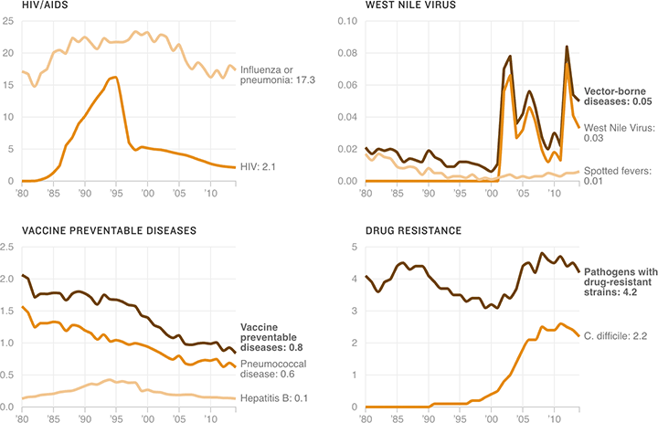

Thirty-Five Years Of Sickness And Health
New medications and vaccines have helped reduce the death toll from diseases like HIV/AIDS and hepatitis B. But new threats are emerging. (Note: Because of the varying rates — for example, the comparatively low death rates from West Nile Virus — these charts are on different scales.)
Mortality rates per 100,000 population (1980-2014)
